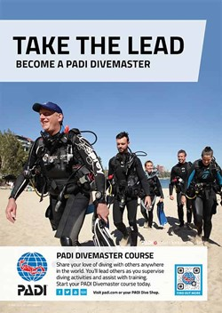

PADI Certifications
Garden Isle Divers is proud to offer a full range of PADI dive certifications to meet your needs as a novice or growing diver. Rest assured knowing that your PADI certification is by far the most recognizable dive credential on the planet. Accepted world-wide, your PADI certification card will be your passport to the ocean wherever you may travel.
Book Now!Introduction to Scuba
This class is very popular with island visitors and locals alike. It’s perfect for people who have always been curious about scuba, but haven’t had the time or motivation to enroll in the full certification course. We offer a safe and enjoyable learning experience that will get you and your companions diving Kaua'i’s best reefs in a matter of hours. This is truly one of those experiences that can change the way a person views the world and inspire a newfound love for our oceans.
Our PADI instruction begins on land where we will discuss safety, introduce the new divers to their gear, and practice necessary dive skills in a controlled environment. After that it’s into the ocean where you will discover why scuba is one of the fastest-growing sports in the nation! From start to finish this activity usually runs about 4 hours for instruction and 2 scuba dives. Its amazing to think that a person can go from only dreaming about the experience to having some instruction and 2 open-water dives under their belt all before lunch! Now that’s a vacation to remember!
Open Water Scuba Diver
Let's go diving! Begin the journey today and start working towards your PADI Open Water Scuba Diver rating. This class offers you the flexibility to study online via the PADI e-learner program, or with a traditional textbook and guidance from you instructor. Once the bookwork/knowledge development portion is completed, you spend time familiarizing yourself with the gear and the art of scuba in a controlled water environment. The last and most exciting part of the class will be the 4 dives you complete in the ocean under the guidance of your PADI dive instructor. You have the dream to dive, let us help get you there.
Advanced Open Water
Looking to expand your dive knowledge and grow as a diver? Earn your advanced open water certification by completing 3 adventure dives of your choice plus one deep and one navigation dive. With choices such as night, peak performance buoyancy, underwater naturalist, and nitrox, what are you waiting for? Not enough time to complete all five dives on this vacation? No problem, we can document the dives you complete with us and you can finish up the course down the road with another PADI dive center. Gain the experience when you have the chance. Slow and steady wins the race. At Garden Isle Divers we are dedicated to your growth as a diver and take pride in offering meaningful and educational experiences that will serve you for years to come.
Rescue Diver
A well trained diver is thinking about the safety of others and his/her ability to help when needed. Become a rescue diver and learn to handle practically any issue that may arise during a dive excursion. You will be practicing such skills as surfacing with an unconscious diver, first aid and CPR, lost diver procedure, and panicked diver rescue, just to name a few. If there is one class that people say they grow the most from, it would be the rescue class. Contact us by phone or email to discuss options available.
Divemaster
Earn your Dive-master rating with Garden Isle Divers and start living the dream. The Dive-master course puts you behind the scenes of the dive industry and in charge of guiding tours. This is a professional rating, allowing you to work in the dive industry. All aspects of a dive business are studied. This class goes deeper into dive theory, equipment functions, assisting with students, and leading tours. This class rocks! If you ever dreamed of working in the dive industry it is a must have! You will be studying a bit, familiarizing yourself with the daily activities of our dive shop and diving your butt off. If you ever wanted to go professional as a diver, let us help get you there. Call or email us today to discuss options.
All of our instruction is done with your safety and progress as a diver as the most valuable thing for us to oversee as your instructor. With a strict adherence to industry standards you can rest assured you’re earning a certification you can be proud of. At Garden Isle Divers we feel that diving, although fun, should be approached with a certain level of seriousness and respect. Think of it as earning a pilot’s license. We expect you to be prepared for class and perform to the best of your ability for your safety and for your enjoyment. We don’t expect perfection but we do expect that you have a healthy respect for the sport and a willingness to learn and have fun. We do not give out dive certificates to just anyone. You earn them!!! At the end of any of your classes with us you should be proud of your accomplishments as a diver and confident that your new skills will serve you well for a lifetime of dive travel and adventure.
Specialty Ratings
Some are all about fun. Some are practical. All are great to have as part of your skill set! PADI specialty courses offer a focused and detailed training regimen that will turn you into an expert diver. Each specialty focuses on a specific skill set such as Search and Recovery or Deep Diving. Specialty courses are offered on demand so contact us by phone or email to discuss options available.
Specialty courses we offer:
Contact us!